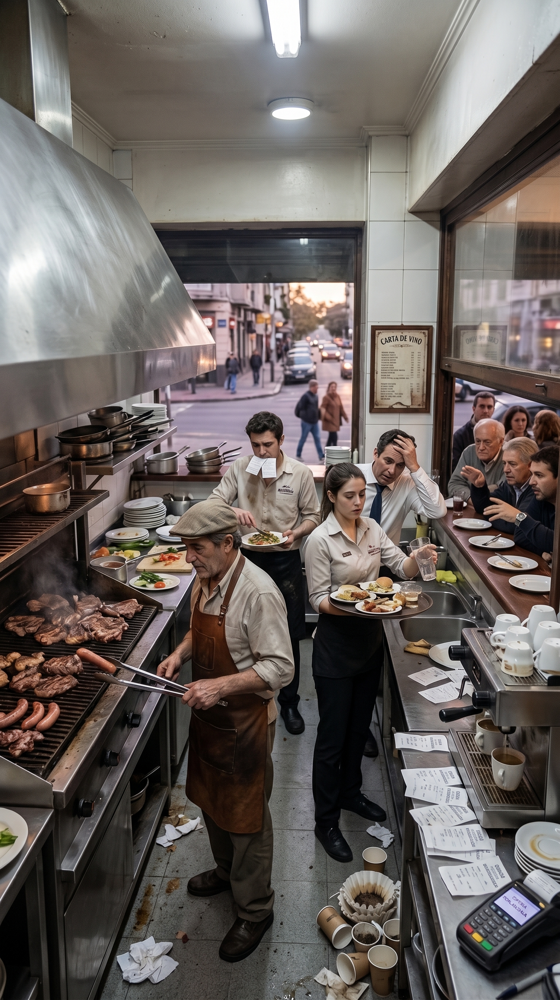
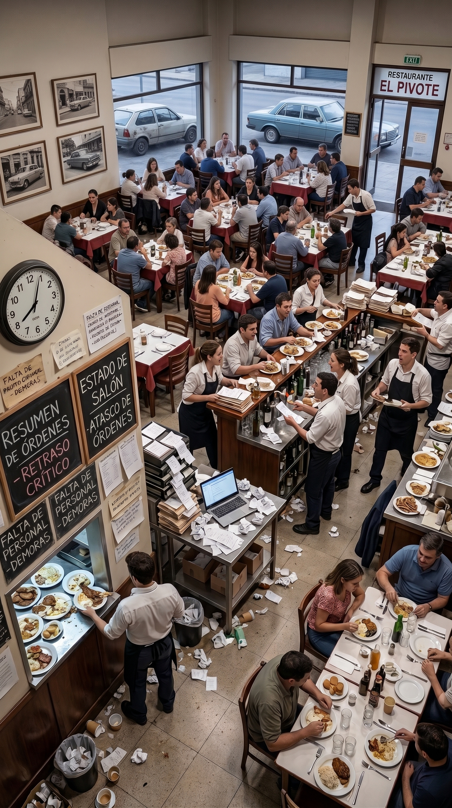
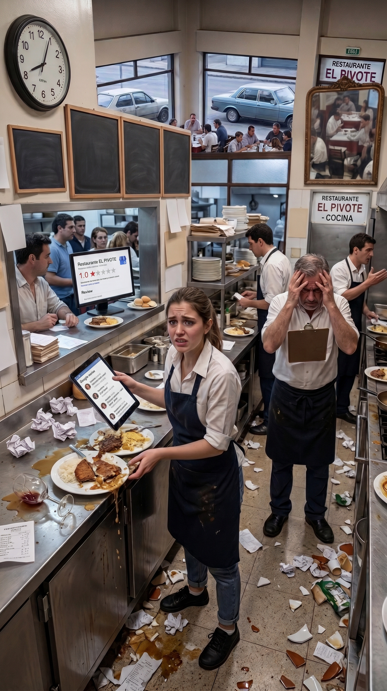

Calculá el costo invisible por rotación de personal, mermas en servicio y vacantes en períodos de alta demanda.
El recambio constante de personal desgasta al equipo base y afecta directamente la facturación del local:

La falta de mozos experimentados genera demoras en la toma de comanda y el cobro. Un salón lento reduce la rotación de mesas por turno y baja el ticket promedio.

Cuando falta un integrante, el encargado o el cocinero principal deben cubrir la posición. El agotamiento provoca fallas de control, desperdicio de insumos y renuncias en cadena.

El personal que ingresa sin inducción comete errores en los marchados, rompe vajilla o descuida la atención, dañando la calificación del local en Google y redes sociales.
Acompañamos a locales gastronómicos y establecimientos hoteleros a profesionalizar sus selecciones, estructurar pautas de inducción y reducir la rotación en momentos de alta exigencia.
👉 Ver Soluciones de Selección y Gestión Humana